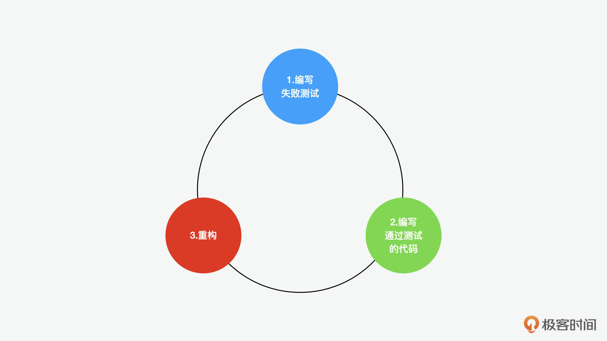
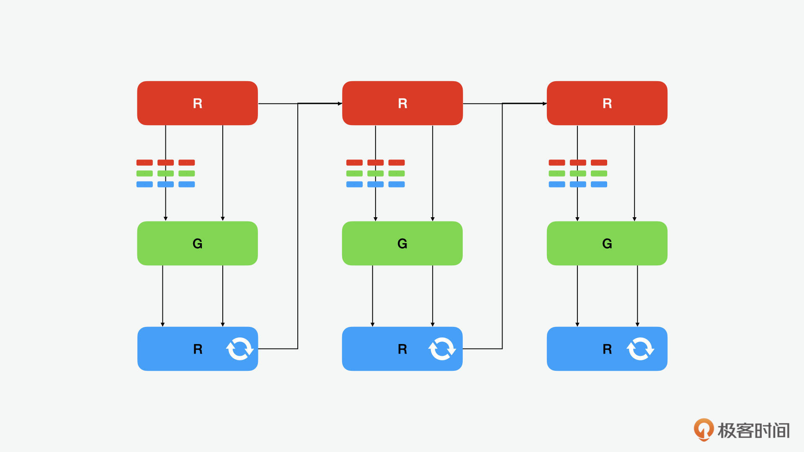

- 00 开篇词 JavaScript的进阶之路.md
- 01 函数式vs.面向对象：响应未知和不确定.md
- 02 如何通过闭包对象管理程序中状态的变化？.md
- 03 如何通过部分应用和柯里化让函数具象化？.md
- 04 如何通过组合、管道和reducer让函数抽象化？.md
- 05 map、reduce和monad如何围绕值进行操作？.md
- 06 如何通过模块化、异步和观察做到动态加载？.md
- 07 深入理解对象的私有和静态属性.md
- 08 深入理解继承、Delegation和组合.md
- 09 面向对象：通过词法作用域和调用点理解this绑定.md
- 10 JS有哪8种数据类型，你需要注意什么？.md
- 11 通过JS引擎的堆栈了解闭包原理.md
- 12 JS语义分析该用迭代还是递归？.md
- 13 JS引擎如何实现数组的稳定排序？.md
- 14 通过SparkPlug深入了解调用栈.md
- 15 如何通过哈希查找JS对象内存地址？.md
- 16 为什么环形队列适合做Node数据流缓存？.md
- 17 如何通过链表做LRU_LFU缓存？.md
- 18 TurboFan如何用图做JS编译优化？.md
- 19 通过树和图看如何在无序中找到路径和秩序.md
- 20 算法思想：JS中分治、贪心、回溯和动态规划.md
- 21 创建型：为什么说Redux可以替代单例状态管理.md
- 22 结构型：Vue.js如何通过代理实现响应式编程.md
- 23 结构型：通过jQuery看结构型模式.md
- 24 行为型：通过观察者、迭代器模式看JS异步回调.md
- 25 行为型：模版、策略和状态模式有什么区别？.md
- 26 特殊型：前端有哪些处理加载和渲染的特殊“模式”？.md
- 27 性能：如何理解JavaScript中的并行、并发？（上）.md
- 28 性能：如何理解JavaScript中的并行、并发？（下）.md
- 29 性能：通过Orinoco、Jank Busters看垃圾回收.md
- 30 网络：从HTTP_1到HTTP_3，你都需要了解什么？.md
- 31 安全：JS代码和程序都需要注意哪些安全问题？.md
- 32 测试（一）：开发到重构中的测试.md
- 33 测试（二）：功能性测试.md
- 34 测试（三）：非功能性测试.md
- 35 静态类型检查：ESLint语法规则和代码风格的检查.md
- 36 Flow：通过Flow类看JS的类型检查.md
- 37 包管理和分发：通过NPM做包的管理和分发.md
- 38 编译和打包：通过Webpack、Babel做编译和打包.md
- 39 语法扩展：通过JSX来做语法扩展.md
- 40 Polyfill：通过Polyfill让浏览器提供原生支持.md
- 41 微前端：从MVC贫血模式到DDD充血模式.md
- 42 大前端：通过一云多端搭建跨PC_移动的平台应用.md
- 43 元编程：通过Proxies和Reflect赋能元编程.md
- 结束语 JavaScript的未来之路：源于一个以终为始的初心.md
32 测试（一）：开发到重构中的测试
你好，我是石川。
在软件工程中有很多思想，其中被谈及最多的就是敏捷交付了。虽然人们一直讲敏捷，快速交付，但是往往忽略了敏捷不代表牺牲质量。而问题是，在强调开发速度的同时，交付质量在很多时候容易被忽视。于是，测试驱动开发（TDD）的思想就诞生了，虽然后面又出现了面向用户的行为驱动测试，但是对于开发者而言，TDD仍然是和敏捷最成熟的搭配开发模式。
今天，就让我们来看看测试驱动的开发。
红绿重构
测试驱动开发中有个很重要的概念就是红绿重构（red/green/refactor）循环，在一个循环中，有三个步骤：
- 第1步是创建一个失败的测试，因为这时我们还没有相关的功能被开发出来，所以测试肯定是失败的，这是红色的部分；
- 第2步是写出恰好能通过测试的代码，这个就是绿色的部分；
- 第3步是重构，在这一步中我们会看之前的代码是否有可以优化的部分来进行优化。

乍一看，你可能觉得这似乎是反直觉的。TDD和传统的开发相反，在传统的开发中，按道理来说我们应该先做第3步，设计出“优雅”的代码结构；然后再做第2步，写好代码；最后再做第1步，测试基于我们的设计开发出来的代码。
那为什么在TDD中我们要反其道而行呢？这其中的原因是我们的测试用例并不是凭空想象的，它是根据我们的用户故事和验收条件创建的。它的目的是让我们从第1步开发前就清楚开发的目的和想要得到的结果，然后第2步才是写出满足我们目标的代码，也就是一步步实现目标的过程。这时，如果我们的代码写好了，那它自然而然就通过测试了，从而避免积累了大量的问题后，才发现之前写的程序有问题。
那为什么重构是第3步呢？因为对于我们大多数的项目，特别是业务驱动的项目来说，时间就是金钱，效率就是生命。所以能按时开发出可以运行的代码比开发出优雅的代码更重要。因为可以运行的代码是用户可以直接获益的，而优雅的代码很多时候是程序员更关注的。
那这里你可能会担心，这样一再追求结果的开发模式，会不会导致长期过度以结果为导向，而影响了代码的质量，造成长期的技术债？不用担心，这正是“红绿重构循环”中的循环要解决的问题。重构不是在技术债的积累爆发后进行的，而是每次的开发周期中的一个环节。也就是说它还是存在的，并且一直迭代。这样就在避免了开始的过度设计的同时，也保证了持续的优化和迭代。
重构的目的一般是通过对代码结构的调整和去重来优化我们的软件设计，让我们的代码更容易理解。所以它的目的虽然不是让我们更快地交付最小化可行产品（MVP），但是它可以让我们的代码变得更易懂和容易维护，如我们在函数式编程中曾经提到的，毕竟我们写的代码更多是给人读的，而不是给机器读的。
测试TDD还是行为BDD驱动开发
我们知道除了TDD外，另外一个概念是 BDD开发。基本上，BDD和TDD的测试流程很相似，它们的不同主要体现在测试的角度上。
对于TDD来说，测试用例是用代码写的，面向的对象是程序员。而BDD的测试用例一般是业务人员或用户写的，所以用例可以是我们平时用的中英文语言，而不是代码。
TDD核心关注的是最小单元的测试，也就是单元测试（unit test），其次是集成（integration test）和端到端测试（end to end test）。因为BDD的测试已经到行为层面了，所以这样的测试一般要在端到端的基础上才能运行，也就是说如果我们要在BDD中也用红绿重构的话，它里面也会有更小的TDD单元测试的红绿重构循环。
这也就引出了下一个问题，红绿重构可以是循环嵌套的。比如，如下图所示，我们在左上角编写了一个失败的测试，也就是红色状态的测试。从这个状态出发，有3种可能性。一是我们可以顺着第一个失败的测试编写下一个失败测试用例；二是我们可以顺着这个失败用例写出相关的程序来通过测试；三是我们没办法通过当前这个测试，这时，我们需要下一层的循环嵌套，在里面再创建一个红绿重构的流程，继续创建新的失败测试。

对于处于绿色状态的测试而言，也可能出现两种场景。第1种场景是重构；第2种场景是完成调用，离开循环，也就代表测试已经通过且没有需要重构的代码。最后，对于处于蓝色的重构状态来说，我们可以重构，基于测试结果，我们可以继续重构，或者完成代码测试，并离开循环。
当所有测试都完成后，所有的流程都会离开循环。如果我们处于内部循环，这意味着我们进入外部循环的绿色阶段。如果我们处于外部循环中，并且我们想不出更多的测试要写，那么整体的测试就完成了。
这个过程中值得注意的是，只有在绿色测试通过之后，考虑重构的时候，才会再创建一个新的红色测试。如果不需要重构，就表示没有更多工作要做。比如最近刚刚优化过一次，没有再需要重构的，那就可以直接退出循环了。
在嵌套的测试中，我们把外面一层的测试叫做高级测试，把里面一层叫做低级测试。如果上面的理论还有些抽象的话，我们可以具体到一个TDD循环嵌套的例子来看看。假设我们有一个用户登录的模块，在这个模块中，我们可以有如下里外两层的测试。
- 外部循环失败测试用例可以是：客户可以登录。
- 内部循环的失败测试用例可以是：登录路径 /login 返回200响应；
- 为了通过低级测试，就要编写和测试路由的代码，直到测试状态转为绿色；
- 通过低级测试，状态转绿后，可以开始重构内部循环中的代码；
- 此时外部循环测试可能仍然失败，我们发现缺少一个内部循环的测试，因此我们又编写了一个新的内部循环的失败测试：短信和社交媒体登录验证通过，位于 /login-post 的表单post路由应该重定向到 /personal-center；
- 为了通过新的测试，我们编写了处理成功通过短信/社交媒体验证并返回登录的个人主页的代码；
- 这个新的内部循环测试也通过了，所以我们现在可以重构在内部循环上编写的代码。
- 现在，内部循环的低级测试和外部循环的高级测试都通过了。
- 当外部循环测试中的所有用例都通过变为绿色后，我们就可以重构外部循环的代码了。
延伸：除了单元，还有哪些测试类型？
前面，我们说过对于TDD来说，最核心的是单元测试。因为这个时候我们主要关注的是代码的细节和应用自身的功能实现，所以这时的开发和测试可能都是本地的。那么什么可以被看做是一个单元呢？
在很多语言里，单元指的是类或函数。而在JavaScript中，单元既可以是类或函数，也可以是模块或包。无论我们如何定义单元测试，重点是这类测试关注的是每个单元中功能输入和输出的行为，以及过程中创建的对象。在这个过程中，我们也可能会对上下游系统有依赖，不过这种依赖通常都会通过Mock和Stub的方式模拟代替。通过这种方式，可以将系统间的测试延后。
当前端的自身测试都通过之后，我们会继续集成测试。集成测试通常是一对一的和自己系统相关的上下游的系统间测试。这个时候的上下游系统，可能依然是自己系统的一部分，特别是在大前端的概念下，多个前端可能都会共享一个后端的服务器提供的内容，相关的内容服务可能会通过BFF，也就是为前端提供的后端层（backend for frontend）来提供的。
之后的测试通过后，才会是和外部系统的端到端测试。在端到端测试中，我们可能就会和更多层的系统联调测试。比如一个电商功能，可能我们在前端下的订单，会先调用支付系统的接口完成支付，同时发送电商下单请求，支付成功后收到结果，再发送给电商系统通知发货，电商系统会再通知下游系统发货，将发货通知再返回给前端。这样一个全链路的功能，就需要端到端测试的支持。对于此类测试而言，应用代码应该和其它系统的代码结合。这时，就应该尽量避免使用Mock或Stub来模拟前后端的交互，而是应该强调前端和后端系统之间的接口能实际跑通，也就是基于系统间的集成。
总结
在很多讲TDD测试的书或文章中，通常会偏概念化，希望通过今天的学习，你能对它有更具象的了解。下一讲，我们会更具象化地展开它的实践。
围绕JavaScript而产生的测试工具有很多。而且这些工具很多都是以模块化的方式存在的，也就是说一类测试可以用工具A来完成，另外一类测试又可以通过工具B。在下一讲中，我们就会来看一下Jest，相对于其它的测试框架而言，Jest有对不同类型的测试相对更广泛的支持。这也就避免了我们在不同的测试场景之间切换工具的情况。
除了功能性的测试，还有非功能性测试。非功能性测试又包含了性能测试、安全测试和辅助功能测试等等。这些，我们也会进一步在“测试三部曲”中的第三讲来看。
思考题
我们今天从红绿重构的角度了解了测试驱动的开发，这里我们主要看的是测试的深度（嵌套），除此之外，可能我们也要关注覆盖率和复杂度（圈数），那么你能分享下平时在开发中你是否有测试驱动开发的习惯？通常测试的覆盖率能达到多少呢?
欢迎在留言区分享你的经验、交流学习心得或者提出问题，如果觉得有收获，也欢迎你把今天的内容分享给更多的朋友。我们下节课再见！
© 2019 - 2023 Liangliang Lee. Powered by gin and hexo-theme-book.